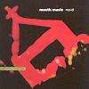

Celtic Lyrics Corner > Artists & Groups > Mouth Music > Mo-Di > Hé Mandu (Mother Mix)
|  | Hé Mandu (Mother Mix) |
| Credits : | Traditional; arranged by Chic Medley |
| Appears On : | Mo-Di |
| Language : | Gàidhlig (Scottish Gaelic) |
| Other Versions : | " Waulking Set " on Ishbel MacAskill's album Essentially Ishbel |
| Lyrics : | English Translation : |
| Hé mandu 's truagh nach digeadh | Alas, that this does not |
| Hé mandu siod 'gham iarraidh | Come to fetch me |
| Hé mandu gille 's litír | A messenger and a letter |
| Hi ri oro each is diollaid | A horse and a saddle |
| Hé mandu hi ri oro hó ró hù ó | Hé mandu hi ri oro hó ró hù ó |
| Hé mandu nam biodh agam | If I had |
| Hé mandu sgiath a ghlaisein | The sparrow's wing |
| Hé mandu iteag nan eoin | The birds' power of flight |
| Hi ri oro spòg na lachain | The wild duck's feet |
| Hé mandu hi ri oro hó ró hù ó | Hé mandu hi ri oro hó ró hù ó |
| Hé mandu, hé mandu, hé mandu | Hé mandu, hé mandu, hé mandu |
| Hé mandu, hé mandu, hé mandu | Hé mandu, hé mandu, hé mandu |
| Hé mandu shnàmhainn na caoil | I would swim |
| Hé mandu air an tarsuinn | Across the narrows |
| Hé mandu an Caol Ileach | The Sound of Islay |
| Hi ri oro 's an Caol Arcach | The Sound of Orkney |
| Hé mandu hi ri oro hó ró hù ó | Hé mandu hi ri oro hó ró hù ó |
| Hé mandu 's rachainn a steach | I would go |
| Hé mandu chon a' chaisteal | Into the castle |
| Hé mandu 's bheirinn a mach | And I would bring |
| Hi ri oro as mo leannan | My sweetheart out |
| Hé mandu hi ri oro hó ró hù ó | Hé mandu hi ri oro hó ró hù ó |
| Hé mandu, hé mandu, hé mandu | Hé mandu, hé mandu, hé mandu |
| Hé mandu, hé mandu, hé mandu | Hé mandu, hé mandu, hé mandu |
| Hé mandu 's truagh nach digeadh | Alas, that this does not |
| Hé mandu siod 'gham iarraidh | Come to fetch me |
| Hé mandu gille 's litír | A messenger and a letter |
| Hi ri oro each is diollaid | A horse and a saddle |
| Hé mandu hi ri oro hó ró hù ó | Hé mandu hi ri oro hó ró hù ó |
| Hé mandu, hé mandu, hé mandu... | Hé mandu, hé mandu, hé mandu... |